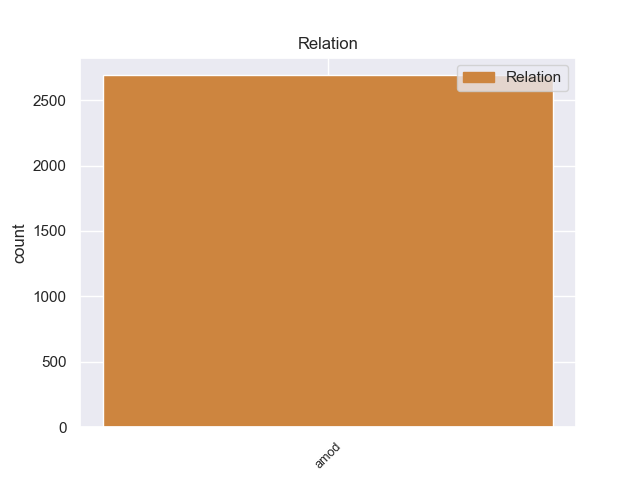
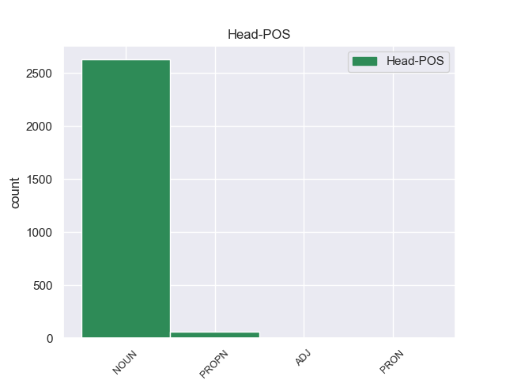
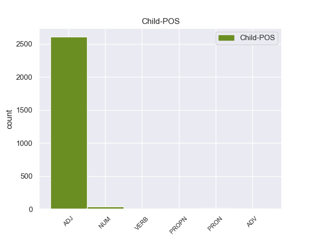

Distribution of features within this leaf



Agreement Rules sorted by frequency.
- When the dependent token is the adjectival modifier(amod) of the head token, and the dependent token is ADJ.
1 Αυτό _ _ _ _ 0 _ _ _
2 μπορεί _ _ _ _ 0 _ _ _
3 να _ _ _ _ 0 _ _ _
4 μην _ _ _ _ 0 _ _ _
5 οδηγήσει _ _ _ _ 0 _ _ _
6 σ _ _ _ _ 0 _ _ _
7 τη _ _ _ _ 0 _ _ _
8 λήξη _ _ _ _ 0 _ _ _
9 του _ _ _ _ 0 _ _ _
10 εν _ _ _ _ 0 _ _ _
11 λόγω _ _ _ _ 0 _ _ _
12 ζητήματος _ _ _ _ 0 _ _ _
13 αλλά _ _ _ _ 0 _ _ _
14 , _ _ _ _ 0 _ _ _
15 σ _ _ _ _ 0 _ _ _
16 τη _ _ _ _ 0 _ _ _
17 μορφή _ _ _ _ 0 _ _ _
18 υπό _ _ _ _ 0 _ _ _
19 την _ _ _ _ 0 _ _ _
20 οποία _ _ _ _ 0 _ _ _
21 την _ _ _ _ 0 _ _ _
22 λάβαμε _ _ _ _ 0 _ _ _
23 , _ _ _ _ 0 _ _ _
24 αυτή _ _ _ _ 0 _ _ _
25 η _ _ _ _ 0 _ _ _
26 αίτηση _ _ _ _ 0 _ _ _
27 άρσης _ _ _ _ 0 _ _ _
28 της _ _ _ _ 0 _ _ _
29 ασυλίας _ _ _ _ 0 _ _ _
30 ήταν _ _ _ _ 0 _ _ _
31 , _ _ _ _ 0 _ _ _
32 κατά _ _ _ _ 0 _ _ _
33 την _ _ _ _ 0 _ _ _
34 άποψη _ _ _ _ 0 _ _ _
35 της _ _ _ _ 0 _ _ _
36 Επιτροπής _ _ _ _ 0 _ _ _
37 Νομικών νομικός ADJ _ Case=Gen|Gender=Fem|Number=Sing 38 amod _ _
38 Θεμάτων θεμάτω NOUN _ Case=Gen|Gender=Fem|Number=Sing 0 _ _ _
39 , _ _ _ _ 0 _ _ _
40 απαράδεκτη _ _ _ _ 0 _ _ _
41 , _ _ _ _ 0 _ _ _
42 άποψη _ _ _ _ 0 _ _ _
43 την _ _ _ _ 0 _ _ _
44 οποία _ _ _ _ 0 _ _ _
45 συνιστώ _ _ _ _ 0 _ _ _
46 σ _ _ _ _ 0 _ _ _
47 το _ _ _ _ 0 _ _ _
48 Σώμα _ _ _ _ 0 _ _ _
49 να _ _ _ _ 0 _ _ _
50 υιοθετήσει _ _ _ _ 0 _ _ _
51 . _ _ _ _ 0 _ _ _
1 Σ _ _ _ _ 0 _ _ _
2 το _ _ _ _ 0 _ _ _
3 δεύτερο _ _ _ _ 0 _ _ _
4 , _ _ _ _ 0 _ _ _
5 οι _ _ _ _ 0 _ _ _
6 Ρώσοι _ _ _ _ 0 _ _ _
7 προσπάθησαν _ _ _ _ 0 _ _ _
8 να _ _ _ _ 0 _ _ _
9 ισοφαρίσουν _ _ _ _ 0 _ _ _
10 , _ _ _ _ 0 _ _ _
11 αλλά _ _ _ _ 0 _ _ _
12 ένα _ _ _ _ 0 _ _ _
13 λεπτό _ _ _ _ 0 _ _ _
14 πριν _ _ _ _ 0 _ _ _
15 τη _ _ _ _ 0 _ _ _
16 λήξη _ _ _ _ 0 _ _ _
17 ο _ _ _ _ 0 _ _ _
18 Ολιβέιρα _ _ _ _ 0 _ _ _
19 σκόραρε _ _ _ _ 0 _ _ _
20 το _ _ _ _ 0 _ _ _
21 δεύτερο δεύτερος NUM _ Case=Acc|Gender=Neut|Number=Sing 22 amod _ _
22 γκολ γκολ NOUN _ Case=Acc|Gender=Neut|Number=Sing 0 _ _ _
23 των _ _ _ _ 0 _ _ _
24 Πορτογάλων _ _ _ _ 0 _ _ _
25 . _ _ _ _ 0 _ _ _
1 Τα _ _ _ _ 0 _ _ _
2 ευρωπαϊκά _ _ _ _ 0 _ _ _
3 πολεμικά _ _ _ _ 0 _ _ _
4 χτύπησαν _ _ _ _ 0 _ _ _
5 με _ _ _ _ 0 _ _ _
6 τα _ _ _ _ 0 _ _ _
7 πυροβόλα _ _ _ _ 0 _ _ _
8 τους _ _ _ _ 0 _ _ _
9 , _ _ _ _ 0 _ _ _
10 τους _ _ _ _ 0 _ _ _
11 επαναστάτες _ _ _ _ 0 _ _ _
12 σ _ _ _ _ 0 _ _ _
13 το _ _ _ _ 0 _ _ _
14 Ακρωτήρι _ _ _ _ 0 _ _ _
15 , _ _ _ _ 0 _ _ _
16 ρίχνοντας _ _ _ _ 0 _ _ _
17 τη _ _ _ _ 0 _ _ _
18 σημαία _ _ _ _ 0 _ _ _
19 που _ _ _ _ 0 _ _ _
20 υψώθηκε _ _ _ _ 0 _ _ _
21 αμέσως _ _ _ _ 0 _ _ _
22 πάλι _ _ _ _ 0 _ _ _
23 υπό _ _ _ _ 0 _ _ _
24 τις _ _ _ _ 0 _ _ _
25 θυελλώδεις _ _ _ _ 0 _ _ _
26 ζητωκραυγές _ _ _ _ 0 _ _ _
27 των _ _ _ _ 0 _ _ _
28 πληρωμάτων _ _ _ _ 0 _ _ _
29 των _ _ _ _ 0 _ _ _
30 ελληνικών _ _ _ _ 0 _ _ _
31 πολεμικών _ _ _ _ 0 _ _ _
32 που _ _ _ _ 0 _ _ _
33 ναυλοχούσαν _ _ _ _ 0 _ _ _
34 στ' _ _ _ _ 0 _ _ _
35 ανοιχτά _ _ _ _ 0 _ _ _
36 αλλά _ _ _ _ 0 _ _ _
37 δεν _ _ _ _ 0 _ _ _
38 μπορούσαν _ _ _ _ 0 _ _ _
39 να _ _ _ _ 0 _ _ _
40 επέμβουν _ _ _ _ 0 _ _ _
41 ενώ _ _ _ _ 0 _ _ _
42 σ _ _ _ _ 0 _ _ _
43 το _ _ _ _ 0 _ _ _
44 θωρηκτό _ _ _ _ 0 _ _ _
45 " _ _ _ _ 0 _ _ _
46 Ύδρα _ _ _ _ 0 _ _ _
47 " _ _ _ _ 0 _ _ _
48 γινόταν _ _ _ _ 0 _ _ _
49 ανάκρουση _ _ _ _ 0 _ _ _
50 του _ _ _ _ 0 _ _ _
51 Εθνικού _ _ _ _ 0 _ _ _
52 μας μας PRON _ Case=Gen|Gender=Fem|Number=Sing 53 amod _ _
53 Ύμνου Ύμνου NOUN _ Case=Gen|Gender=Fem|Number=Sing 0 _ _ _
54 . _ _ _ _ 0 _ _ _
1 Σ _ _ _ _ 0 _ _ _
2 τις _ _ _ _ 0 _ _ _
3 16_Αυγούστου_1916 _ _ _ _ 0 _ _ _
4 έγινε _ _ _ _ 0 _ _ _
5 συλλαλητήριο _ _ _ _ 0 _ _ _
6 σ _ _ _ _ 0 _ _ _
7 την _ _ _ _ 0 _ _ _
8 Αθήνα _ _ _ _ 0 _ _ _
9 ( _ _ _ _ 0 _ _ _
10 κίνημα _ _ _ _ 0 _ _ _
11 της _ _ _ _ 0 _ _ _
12 Εθνικής εθνική PROPN _ Case=Gen|Gender=Fem|Number=Sing 13 amod _ _
13 Αμύνης Αμύνης PROPN _ Case=Gen|Gender=Fem|Number=Sing 0 _ _ _
14 ) _ _ _ _ 0 _ _ _
15 , _ _ _ _ 0 _ _ _
16 όπου _ _ _ _ 0 _ _ _
17 με _ _ _ _ 0 _ _ _
18 την _ _ _ _ 0 _ _ _
19 υποστήριξη _ _ _ _ 0 _ _ _
20 του _ _ _ _ 0 _ _ _
21 συμμαχικού _ _ _ _ 0 _ _ _
22 στρατού _ _ _ _ 0 _ _ _
23 , _ _ _ _ 0 _ _ _
24 που _ _ _ _ 0 _ _ _
25 είχε _ _ _ _ 0 _ _ _
26 αποβιβαστεί _ _ _ _ 0 _ _ _
27 σ _ _ _ _ 0 _ _ _
28 την _ _ _ _ 0 _ _ _
29 πρωτεύουσα _ _ _ _ 0 _ _ _
30 της _ _ _ _ 0 _ _ _
31 Μακεδονίας _ _ _ _ 0 _ _ _
32 , _ _ _ _ 0 _ _ _
33 ο _ _ _ _ 0 _ _ _
34 Βενιζέλος _ _ _ _ 0 _ _ _
35 ανακοίνωσε _ _ _ _ 0 _ _ _
36 σ _ _ _ _ 0 _ _ _
37 το _ _ _ _ 0 _ _ _
38 λαό _ _ _ _ 0 _ _ _
39 την _ _ _ _ 0 _ _ _
40 πλήρη _ _ _ _ 0 _ _ _
41 διαφωνία _ _ _ _ 0 _ _ _
42 του _ _ _ _ 0 _ _ _
43 με _ _ _ _ 0 _ _ _
44 τους _ _ _ _ 0 _ _ _
45 χειρισμούς _ _ _ _ 0 _ _ _
46 του _ _ _ _ 0 _ _ _
47 Στέμματος _ _ _ _ 0 _ _ _
48 . _ _ _ _ 0 _ _ _
1 Είναι _ _ _ _ 0 _ _ _
2 παράλογος παράλογος ADV _ Case=Nom|Gender=Fem|Number=Sing 4 amod _ _
3 ο _ _ _ _ 0 _ _ _
4 τρόπος τρόποςς NOUN _ Case=Acc|Gender=Masc|Number=Sing 0 _ _ _
5 με _ _ _ _ 0 _ _ _
6 τον _ _ _ _ 0 _ _ _
7 οποίο _ _ _ _ 0 _ _ _
8 πραγματοποιούνται _ _ _ _ 0 _ _ _
9 οι _ _ _ _ 0 _ _ _
10 μεταφορές _ _ _ _ 0 _ _ _
11 σ _ _ _ _ 0 _ _ _
12 την _ _ _ _ 0 _ _ _
13 Ευρώπη _ _ _ _ 0 _ _ _
14 . _ _ _ _ 0 _ _ _
1 Όπως _ _ _ _ 0 _ _ _
2 ανέφεραν _ _ _ _ 0 _ _ _
3 , _ _ _ _ 0 _ _ _
4 « _ _ _ _ 0 _ _ _
5 οι _ _ _ _ 0 _ _ _
6 συμπλοκές _ _ _ _ 0 _ _ _
7 ξέσπασαν _ _ _ _ 0 _ _ _
8 σ _ _ _ _ 0 _ _ _
9 την _ _ _ _ 0 _ _ _
10 επαρχία _ _ _ _ 0 _ _ _
11 Αμπιγιάν _ _ _ _ 0 _ _ _
12 , _ _ _ _ 0 _ _ _
13 όταν _ _ _ _ 0 _ _ _
14 οι _ _ _ _ 0 _ _ _
15 ένοπλοι _ _ _ _ 0 _ _ _
16 πυροδότησαν _ _ _ _ 0 _ _ _
17 αυτοκίνητα αυτοκίνητο NOUN NOUN Case=Acc|Gender=Neut|Number=Plur 0 _ _ _
18 παγιδευμένα παγιδευμένος VERB VERB Aspect=Perf|Case=Acc|Gender=Neut|Number=Plur|VerbForm=Part|Voice=Pass 17 amod _ _
19 με _ _ _ _ 0 _ _ _
20 εκρηκτικά _ _ _ _ 0 _ _ _
21 και _ _ _ _ 0 _ _ _
22 κατέλαβαν _ _ _ _ 0 _ _ _
23 στρατιωτικό _ _ _ _ 0 _ _ _
24 φυλάκιο _ _ _ _ 0 _ _ _
25 σ _ _ _ _ 0 _ _ _
26 την _ _ _ _ 0 _ _ _
27 περιοχή _ _ _ _ 0 _ _ _
28 Κουντ _ _ _ _ 0 _ _ _
29 κοντά _ _ _ _ 0 _ _ _
30 σ _ _ _ _ 0 _ _ _
31 την _ _ _ _ 0 _ _ _
32 πρωτεύουσα _ _ _ _ 0 _ _ _
33 της _ _ _ _ 0 _ _ _
34 επαρχίας _ _ _ _ 0 _ _ _
35 Ζίνζιμπαρ _ _ _ _ 0 _ _ _
36 » _ _ _ _ 0 _ _ _
37 . _ _ _ _ 0 _ _ _
Disagree Examples:
1 Πράγματι _ _ _ _ 0 _ _ _
2 , _ _ _ _ 0 _ _ _
3 η _ _ _ _ 0 _ _ _
4 Σύμβαση _ _ _ _ 0 _ _ _
5 του _ _ _ _ 0 _ _ _
6 1991 _ _ _ _ 0 _ _ _
7 σχετικά _ _ _ _ 0 _ _ _
8 με _ _ _ _ 0 _ _ _
9 την _ _ _ _ 0 _ _ _
10 εκτέλεση εκτέλεση NOUN NOUN Case=Acc|Gender=Fem|Number=Sing 0 _ _ _
11 αλλοδαπών αλλοδαπός ADJ ADJ Case=Gen|Gender=Fem|Number=Plur 10 amod _ _
12 αποφάσεων _ _ _ _ 0 _ _ _
13 σε _ _ _ _ 0 _ _ _
14 ποινικές _ _ _ _ 0 _ _ _
15 υποθέσεις _ _ _ _ 0 _ _ _
16 - _ _ _ _ 0 _ _ _
17 η _ _ _ _ 0 _ _ _
18 οποία _ _ _ _ 0 _ _ _
19 διαφορετικά _ _ _ _ 0 _ _ _
20 θα _ _ _ _ 0 _ _ _
21 ήταν _ _ _ _ 0 _ _ _
22 σχετική _ _ _ _ 0 _ _ _
23 με _ _ _ _ 0 _ _ _
24 το _ _ _ _ 0 _ _ _
25 θέμα _ _ _ _ 0 _ _ _
26 μας _ _ _ _ 0 _ _ _
27 - _ _ _ _ 0 _ _ _
28 δεν _ _ _ _ 0 _ _ _
29 έχει _ _ _ _ 0 _ _ _
30 τεθεί _ _ _ _ 0 _ _ _
31 ακόμα _ _ _ _ 0 _ _ _
32 σε _ _ _ _ 0 _ _ _
33 ισχύ _ _ _ _ 0 _ _ _
34 , _ _ _ _ 0 _ _ _
35 δέκα _ _ _ _ 0 _ _ _
36 χρόνια _ _ _ _ 0 _ _ _
37 ύστερα _ _ _ _ 0 _ _ _
38 από _ _ _ _ 0 _ _ _
39 την _ _ _ _ 0 _ _ _
40 υπογραφή _ _ _ _ 0 _ _ _
41 της _ _ _ _ 0 _ _ _
42 . _ _ _ _ 0 _ _ _
1 Αυξάνεται _ _ _ _ 0 _ _ _
2 συνεχώς _ _ _ _ 0 _ _ _
3 ο _ _ _ _ 0 _ _ _
4 αριθμός αριθμός NOUN NOUN Case=Nom|Gender=Masc|Number=Sing 0 _ _ _
5 των _ _ _ _ 0 _ _ _
6 νεόπτωχων νεόπτωχος ADJ ADJ Case=Gen|Gender=Masc|Number=Plur 4 amod _ _
7 σ _ _ _ _ 0 _ _ _
8 την _ _ _ _ 0 _ _ _
9 Ευρώπη _ _ _ _ 0 _ _ _
10 . _ _ _ _ 0 _ _ _
1 Το _ _ _ _ 0 _ _ _
2 παράρτημα _ _ _ _ 0 _ _ _
3 της _ _ _ _ 0 _ _ _
4 οργάνωσης _ _ _ _ 0 _ _ _
5 σ _ _ _ _ 0 _ _ _
6 τη _ _ _ _ 0 _ _ _
7 Δανία _ _ _ _ 0 _ _ _
8 ανέφερε _ _ _ _ 0 _ _ _
9 ότι _ _ _ _ 0 _ _ _
10 " _ _ _ _ 0 _ _ _
11 τα _ _ _ _ 0 _ _ _
12 φετινά φετινός ADJ ADJ Case=Acc|Gender=Neut|Number=Sing 13 amod _ _
13 Χριστούγεννα Χριστούγεννα PROPN PROPN Case=Acc|Gender=Neut|Number=Plur 0 _ _ _
14 υπήρξε _ _ _ _ 0 _ _ _
15 αύξηση _ _ _ _ 0 _ _ _
16 100% _ _ _ _ 0 _ _ _
17 σ _ _ _ _ 0 _ _ _
18 τα _ _ _ _ 0 _ _ _
19 άτομα _ _ _ _ 0 _ _ _
20 που _ _ _ _ 0 _ _ _
21 ζήτησαν _ _ _ _ 0 _ _ _
22 βοήθεια _ _ _ _ 0 _ _ _
23 , _ _ _ _ 0 _ _ _
24 σε _ _ _ _ 0 _ _ _
25 σχέση _ _ _ _ 0 _ _ _
26 με _ _ _ _ 0 _ _ _
27 το _ _ _ _ 0 _ _ _
28 2009 _ _ _ _ 0 _ _ _
29 " _ _ _ _ 0 _ _ _
30 . _ _ _ _ 0 _ _ _
1 Σε _ _ _ _ 0 _ _ _
2 ομιλία _ _ _ _ 0 _ _ _
3 του _ _ _ _ 0 _ _ _
4 σ _ _ _ _ 0 _ _ _
5 το _ _ _ _ 0 _ _ _
6 Λευκό _ _ _ _ 0 _ _ _
7 Οίκο _ _ _ _ 0 _ _ _
8 , _ _ _ _ 0 _ _ _
9 ο _ _ _ _ 0 _ _ _
10 πρόεδρος _ _ _ _ 0 _ _ _
11 Ομπάμα _ _ _ _ 0 _ _ _
12 δήλωσε _ _ _ _ 0 _ _ _
13 ότι _ _ _ _ 0 _ _ _
14 ο _ _ _ _ 0 _ _ _
15 εγκέφαλος _ _ _ _ 0 _ _ _
16 παραμένει _ _ _ _ 0 _ _ _
17 επιστημονικό _ _ _ _ 0 _ _ _
18 μυστήριο _ _ _ _ 0 _ _ _
19 , _ _ _ _ 0 _ _ _
20 παρά _ _ _ _ 0 _ _ _
21 το _ _ _ _ 0 _ _ _
22 γεγονός _ _ _ _ 0 _ _ _
23 ότι _ _ _ _ 0 _ _ _
24 ο _ _ _ _ 0 _ _ _
25 ίδιος _ _ _ _ 0 _ _ _
26 ο _ _ _ _ 0 _ _ _
27 άνθρωπος _ _ _ _ 0 _ _ _
28 έχει _ _ _ _ 0 _ _ _
29 κατορθώσει _ _ _ _ 0 _ _ _
30 να _ _ _ _ 0 _ _ _
31 λύσει _ _ _ _ 0 _ _ _
32 τα _ _ _ _ 0 _ _ _
33 μυστήρια μυστήριος ADJ ADJ Case=Acc|Gender=Neut|Number=Plur 0 _ _ _
34 του _ _ _ _ 0 _ _ _
35 σύμπαντος σύμπαν ADJ ADJ Case=Gen|Gender=Masc|Number=Sing 33 amod _ SpaceAfter=No
36 . _ _ _ _ 0 _ _ _
1 Κατά _ _ _ _ 0 _ _ _
2 το _ _ _ _ 0 _ _ _
3 προηγούμενο _ _ _ _ 0 _ _ _
4 έτος _ _ _ _ 0 _ _ _
5 , _ _ _ _ 0 _ _ _
6 είδαμε _ _ _ _ 0 _ _ _
7 να _ _ _ _ 0 _ _ _
8 πραγματοποιείται _ _ _ _ 0 _ _ _
9 κάποια _ _ _ _ 0 _ _ _
10 πρόοδος _ _ _ _ 0 _ _ _
11 όσον _ _ _ _ 0 _ _ _
12 αφορά _ _ _ _ 0 _ _ _
13 αυτή _ _ _ _ 0 _ _ _
14 τη _ _ _ _ 0 _ _ _
15 διαδικασία _ _ _ _ 0 _ _ _
16 , _ _ _ _ 0 _ _ _
17 ιδίως _ _ _ _ 0 _ _ _
18 με _ _ _ _ 0 _ _ _
19 την _ _ _ _ 0 _ _ _
20 υιοθέτηση _ _ _ _ 0 _ _ _
21 της _ _ _ _ 0 _ _ _
22 δέσμης _ _ _ _ 0 _ _ _
23 μέτρων _ _ _ _ 0 _ _ _
24 για _ _ _ _ 0 _ _ _
25 τις _ _ _ _ 0 _ _ _
26 τηλεπικοινωνίες _ _ _ _ 0 _ _ _
27 από _ _ _ _ 0 _ _ _
28 το _ _ _ _ 0 _ _ _
29 Συμβούλιο _ _ _ _ 0 _ _ _
30 , _ _ _ _ 0 _ _ _
31 την _ _ _ _ 0 _ _ _
32 επίτευξη _ _ _ _ 0 _ _ _
33 συμφωνίας _ _ _ _ 0 _ _ _
34 για _ _ _ _ 0 _ _ _
35 το _ _ _ _ 0 _ _ _
36 καταστατικό _ _ _ _ 0 _ _ _
37 της _ _ _ _ 0 _ _ _
38 ευρωπαϊκής _ _ _ _ 0 _ _ _
39 εταιρείας _ _ _ _ 0 _ _ _
40 , _ _ _ _ 0 _ _ _
41 τη _ _ _ _ 0 _ _ _
42 μείωση μείωση NOUN NOUN Case=Acc|Gender=Fem|Number=Sing 0 _ _ _
43 των _ _ _ _ 0 _ _ _
44 φορολογικών _ _ _ _ 0 _ _ _
45 επιβαρύνσεων _ _ _ _ 0 _ _ _
46 κατά _ _ _ _ 0 _ _ _
47 τρία _ _ _ _ 0 _ _ _
48 τέταρτα τέταρτος NUM NUM Case=Acc|Gender=Neut|Number=Plur|NumType=Ord 42 amod _ _
49 της _ _ _ _ 0 _ _ _
50 εκατοστιαίας _ _ _ _ 0 _ _ _
51 μονάδας _ _ _ _ 0 _ _ _
52 του _ _ _ _ 0 _ _ _
53 ΑΕγχΠ _ _ _ _ 0 _ _ _
54 . _ _ _ _ 0 _ _ _